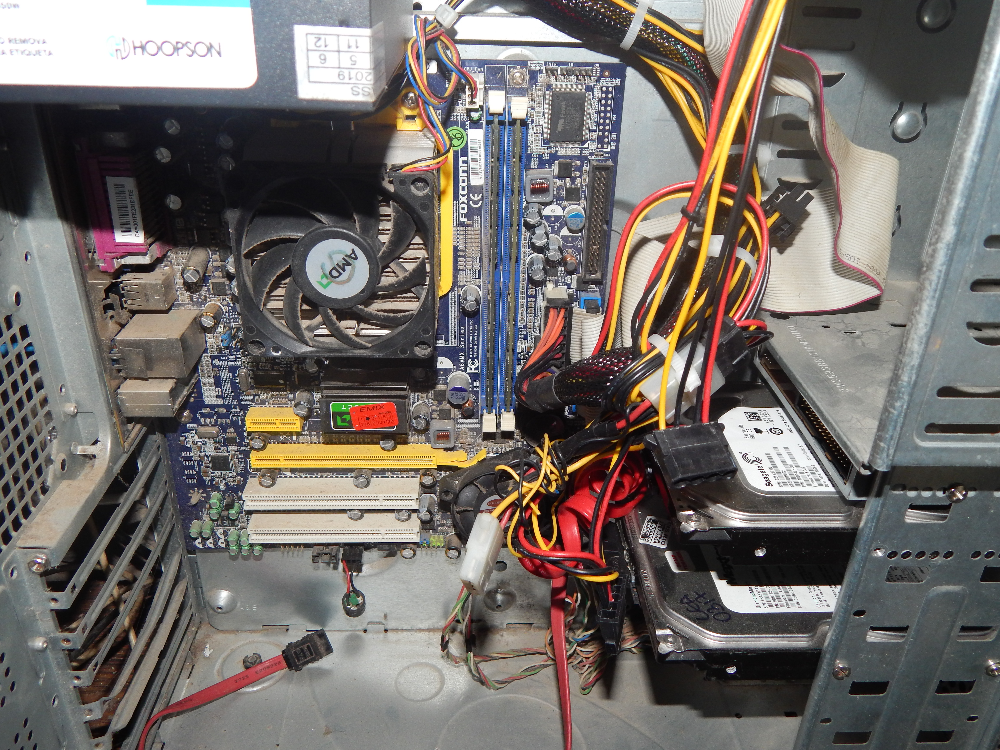
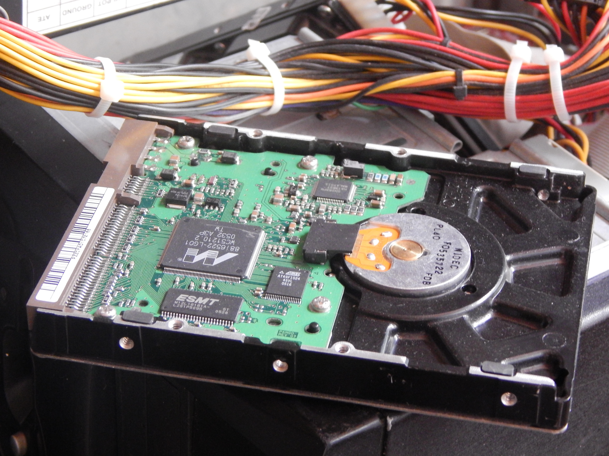

Manutenção de computadores, geralmente, não é algo com o qual nos preocupamos, ela simplesmente acontece. São raros os casos de usuários e empresas que tomam o cuidado de aderir a medidas preventivas – que são muito importantes – para evitar esse momento. Na correria é compreensível que esse assunto seja deixado para depois. Porém, você sentirá a dor de ter evitado ele, quando for pego desprevenido. Então, é hora de refletir sobre a importância da manutenção de computadores, para evitar que a sua empresa venha a parar.

